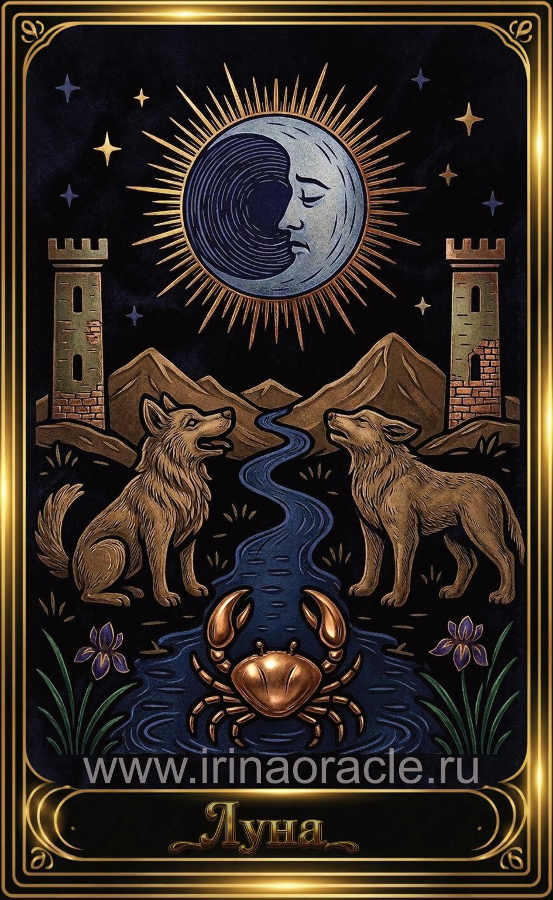

Луна — значение карты Таро
Луна — значение карты Таро

Луна — это карта иллюзий, страхов, интуиции и скрытых процессов. Она показывает путь через туман, где логика бессильна, а внутренний голос становится главным ориентиром. Это энергия ночи, подсознания и того, что ещё не проявлено.
Общее значение
Луна указывает на неопределённость, путаницу, эмоциональные колебания или ситуацию, в которой не всё так, как кажется. Это карта, которая призывает доверять интуиции и внимательно относиться к своим ощущениям.
Она также говорит о скрытых страхах, которые требуют осознания.
Любовь и отношения
В любви Луна указывает на неясность, сомнения, скрытые эмоции или страхи, которые мешают открытости. Иногда — на иллюзии, идеализацию или самообман.
В тени — ревность, тревожность, недоверие или эмоциональная нестабильность.
Работа и финансы
В работе Луна указывает на неопределённость, скрытые процессы, интриги или недостаток информации. Это время, когда важно не принимать поспешных решений.
В финансах карта предупреждает о рисках, иллюзиях или неполных данных.
Здоровье
Луна указывает на психоэмоциональное состояние, гормональные циклы, влияние стресса и скрытые процессы в организме. Иногда — на необходимость отдыха и работы с подсознанием.
Это карта, поддерживающая мягкие практики: медитацию, сон, расслабление.
Совет карты
Прислушайся к интуиции. Не спеши. Луна советует двигаться осторожно, проверять информацию и доверять внутреннему голосу больше, чем внешнему шуму.
Свет придёт постепенно — важно не терять связь с собой.
Теневая сторона
В тени Луна проявляется как страхи, тревожность, иллюзии, самообман или эмоциональная нестабильность. Иногда — как влияние чужих эмоций или манипуляций.
Карта напоминает: страхи исчезают, когда на них смотрят честно.